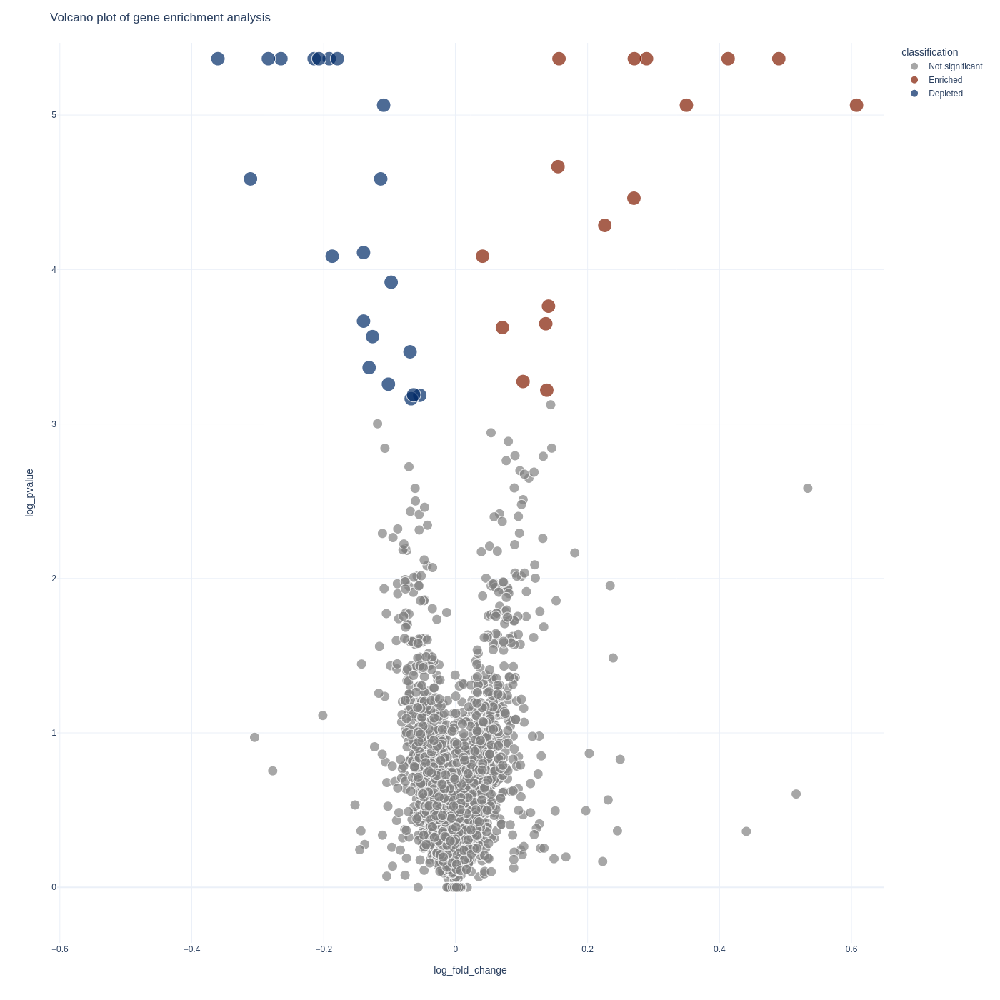
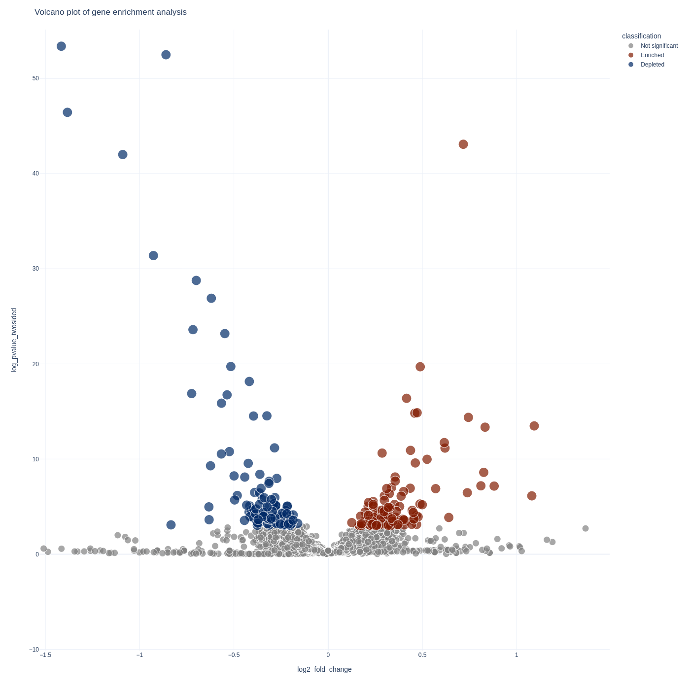

[ How Do I ... ? ]
Hello!
This is a growing collection of tutorials focused around bioinformatics, analysis, and programming in the life sciences.
Take a look at the sidebar for the topics.
If there are things you don't know how to do and want help feel free to reach out and I can write more tutorials or clear up confusing information.
CRISPR Screening
So you just ran a CRISPR screen and got your sequencing files back - what next?
The analysis follows a few steps:
- Mapping your sequencing reads to your reference library
- Differential expression of guide RNA abundances
- Aggregation of guide differential expression into differential expression of genes
- Vizualization and interpretation
Counting sgRNA abundance
Tools Needed
For this step of the analysis we'll need two different tools:
Each of these tools has their own documentation (fxtools and sgcount) for more detailed usage - but I will describe everything you need for your analysis here.
Installation
If you've never used any rust tools before - you will need to install cargo
the rust package manager.
# installs `cargo`
curl --proto '=https' --tlsv1.2 -sSf https://sh.rustup.rs | sh
Then we can install these tools easily with cargo
cargo install fxtools
cargo install sgcount
You can validate that they installed with the following:
fxtools --version
sgcount --version
Reference Library
Reference library format
You will need to identify what your reference library is.
In most cases this is a either a csv or a fasta file of sgrna names and sequences.
The input we expect should be a fasta file of the sgrna library.
Here is an example of what that looks like:
>lib.0
ATAGCCCGGCGGTCTGCTGG
>lib.1
TAAGGCACTATAGCAATGAG
>lib.2
GTAGATAAAACGTGTGGCCC
>lib.3
AAGGCGACCATCTACCCTTG
Processing reference library
There are a few processing steps that we will perform to validate that the
reference library is in the expected format and without errors.
Then we will generate an sgrna -> gene mapping file.
Uppercase
We will first convert the fasta to fully uppercase
fxtools upper -i <your_fasta.fa> -o upper.fa
Unique
We will then identify any duplicate sequences and remove them from the analysis.
fxtools unique -i upper.fa -o uniq.fa -n ambiguous.fa
sgRNA to gene mapping
If your sgrna library is named predictably of the form: <gene>_<information>...
we can automatically generate the sgrna to gene mapping with fxtools
fxtools sgrna-table -i uniq.fa -o g2s.txt
Variable regions
This next step will not apply to everyone - and it depends on whether your reference library is purely the variable region of your guides or if it also contains the constant adapter sequences.
Generally if your sequences are longer than about 23bp then your adapater sequence is still on. You can validate this by seeing if all your sequences share either the same prefix or suffix.
If so - we will need to remove those constant regions and just operate with the variable region.
We can use fxtools for this:
fxtools extract-variable -i uniq.fa -o uniq.var.fa
Guide Counting
Now that we have prepared our reference library we are ready
to map our records with sgcount.
Running sgcount
sgcount \
-l uniq.fa \
-i sample_a.fq.gz sample_b.fq.gz sample_c.fq.gz sample_d.fq.gz \
-n a b c d \
-t 4 \
-g g2s.txt \
-o mapping.tab
In the above command we are:
- providing our reference library (
uniq.faoruniq.var.fa) generated previously. - providing our
fastqfiles representing our sgrna library to the-iflag, - providing an optional custom renaming of those files with the
-nflag, - stating we will be using 4 threads with the
-tflag, - providing our gene to sgrna mapping with the
-gflag, - and writing our results to the output file
mapping.tabwith the-oflag.
Thats it! Once it finishes we're done with this step.
More information
For more detailed information on optional arguments to this check out the sgcount documentation or for information on how it works at sgcount implementation
Differential Expression
Now that we have finished mapping our reads we are ready to perform differential expression.
The following step applies for simple screens or 1-dimensional screens which are generally of the form:
sample_low_1
sample_low_2
sample_high_1
sample_high_2
Note: More complicated schemas For more complicated schemas I recommend using DESeq2 for sgRNA expression then aggregating gene-level information with sgagg.
Installation
For this analysis we will need to use crispr_screen.
We can install it easily with the rust package manager cargo
cargo install crispr_screen
Usage
To run our analysis we just use the following command:
crispr_screen \
-i mapping.tab \
-c sample_low_1 sample_low_2 \
-t sample_high_1 sample_high_2
This will create 2 output files results.gene_results.tab and results.sgrna_results.tab
which reflect the differential expression at the gene and sgrna level respectively.
More Information
This will perform the default enrichment analysis - but for more details or alternative analysis methods check out the crispr_screen documentation.
Visualization
Now we come to the best part - looking at your results!
If you're proficient in python or R this step can be skipped and you can
roll your own visualization method with the results.gene_results.tab and
results.sgrna_results.tab dataframes.
But if you're looking for a quick visualization toolkit you can use my tool
screenviz
Installation
You can install it straight from github with the python package manager pip
pip install git+https://github.com/noamteyssier/screenviz
Usage
Gene Analysis
To visualize your gene-level results you can use the screenviz gene subcommand:
screenviz gene -i results.gene_results.tab
This will write the visualization to a file gene_volcano.html which you can open
in your favorite browser to interact with:
firefox gene_volcano.html

sgRNA Analysis
To visualize your sgrna-level results you can use the screenviz sgrna subcommand:
screenviz sgrna -i results.sgrna_results.tab
This will write the visualization to a file sgrna_volcano.html which you can open
in your favorite browser to intract with:
firefox sgrna_volcano.html
